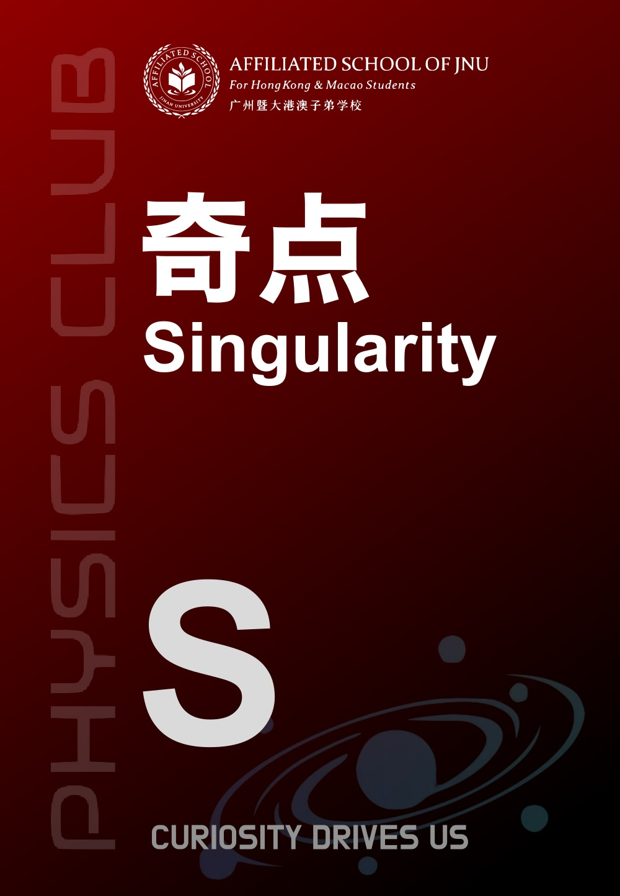
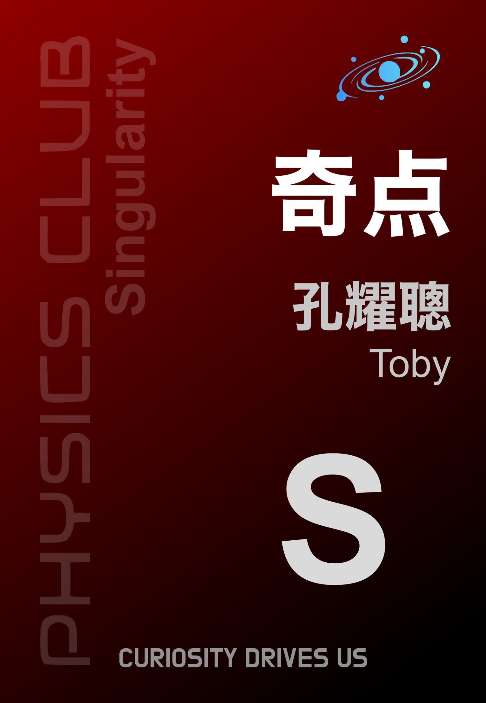
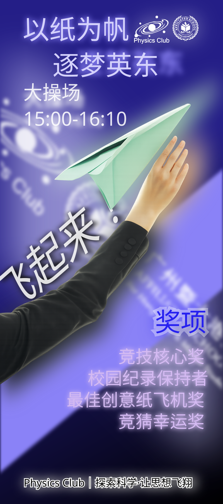
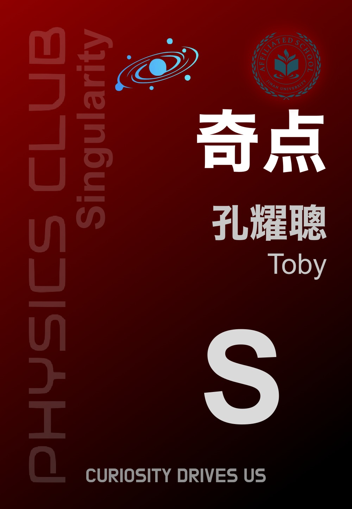
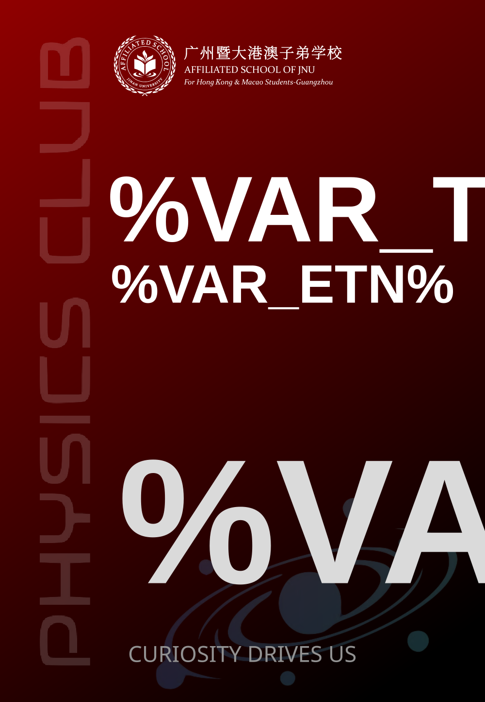
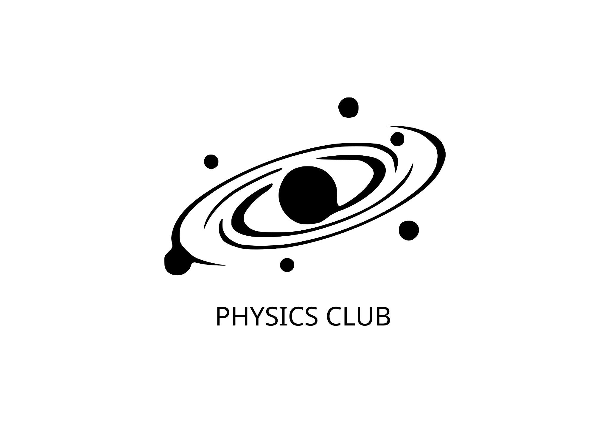

FREEDOM WAS HERE
自由曾在此。
社團已成為過去。
那些提問、嘗試與並肩的時刻，
仍然屬於我們。
留給過去，也留給以後。
A MEMORY, STILL IN MOTION.
A MEMORY, STILL IN MOTION.
01 / 相聚我們曾經，
我們曾經，
聚在同一個問題前。
一間教室，一塊黑板，一群不滿足於標準答案的人。
01 / 03SCROLL TO REMEMBER ↓
A PLACE TO ASK WHY / 關於這裡
物理之外，
是自由探索的我們。
THE COLLECTION / 記憶目錄
03 CHAPTERSTHE DOCUMENT CENTRE / 文稿中心
這裡已經是
一整座文稿中心。
六個分區、全部原始件、三種語言。首頁只是門口，正文在門裡面——講稿、方案、影像與制度，都按類目歸在文檔裡。
進入文稿中心 ↗MORE THAN A NAME / 不止一個名字
一張社牌，一頁講稿，一次把想法交給雙手的嘗試。自由，曾經有過這些具體的形狀。
留存原件，從這裡展開。OBJECTS IN ORBIT / 記憶有了形狀
曾經，屬於這裡。
沿着滾動，繞行一圈原設計。
{kind=link}
{kind=link}

02 / 組別標識 · 原始導出圖{kind=link}
{kind=link}
{kind=link}

05 / 成員牌草案 · 原始導出圖{kind=link}

06 / 飛行節海報 · 原始 SVG{kind=link}

07 / 第二版草案 · 原始導出圖{kind=link}

08 / 成員組正面 · 原始 SVG 模板滾動旋轉 · 點擊正面原件可放大
PAGES LEFT BEHIND / 一頁，一頁，留下來
01 / 04{kind=link}
{kind=link}
{kind=link}
{kind=link}
FOUR FRAMES / 四幕原檔
從一枚標識，到一場活動。
向下滾動，每一幕停留一屏。
01 / IDENTITY我們有了
我們有了
自己的標識。
資料中的藍色社徽，成為社牌、幻燈片與海報之間的共同語言。
02 / BELONGING把歸屬感，
把歸屬感，
帶在身上。
深藍、明亮的名字與軌道圖形，來自當時的社牌設計。
03 / INVITATION讓一張海報，
讓一張海報，
邀請整個校園。
保留原海報的豎長比例、天空藍與紙飛機，不裁切主體。
04 / EVERYDAY讓社團，
讓社團，
走進日常。
連飲料杯也曾擁有一份設計。這是留存的第一版展開稿。
{kind=link}

DESIGN ARCHIVE / 設計原檔
保留當時的樣子。
社徽 / 社牌 / 導引牌 / 海報 / 杯身設計 ↗
ASSEMBLY ROOM / 集會放映室
再翻一次那些頁面。
三次集會 / 31 頁原始演示文稿 ↗
FOR EVERYONE WHO WAS HERE